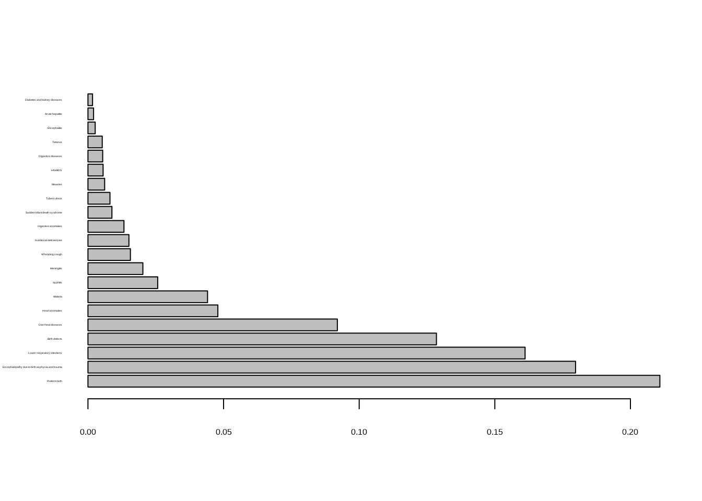
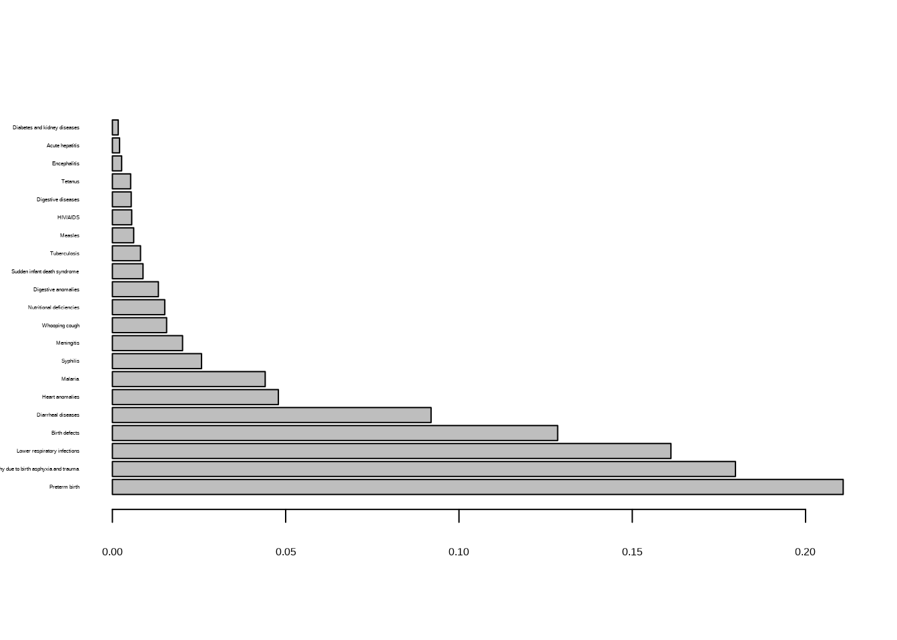
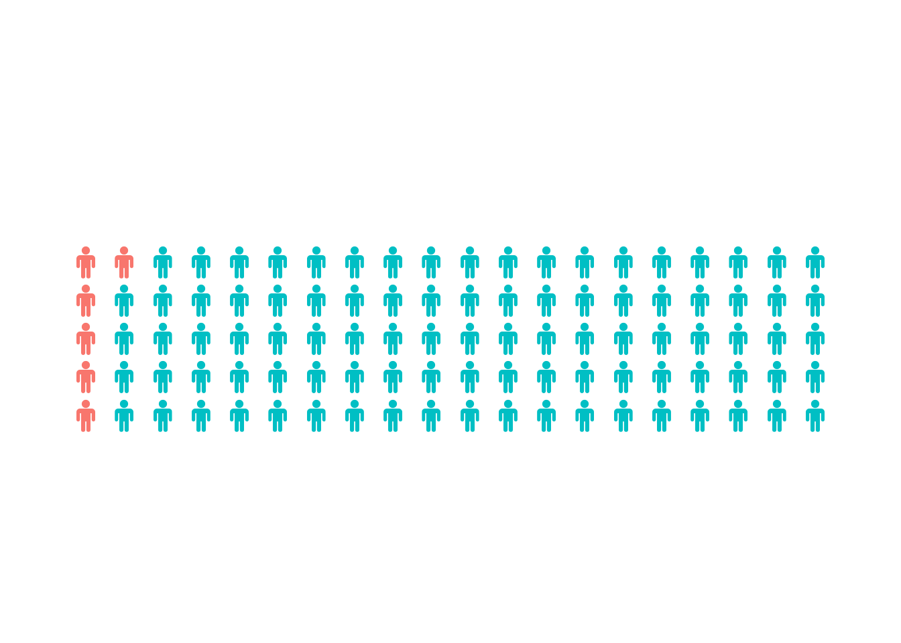

In this chapter we will learn how to analyze and communicate binary variables. Binary variables express answers to yes-no questions. When we summarize many such answers we can express them as proportions or percentages.
We will discuss these concepts within the examples of infant-mortality. This topic is not only interesting because it provides you a very important real world case where we work with counts and proportions of binary variables. It is also a great story of progress and positive global developments, where the data show you how much we have achieved together to better the life of children and infants.
You will learn about important aspects when you communicate such data such as framing, choosing appropriate and truthful visualizations and translate numbers in a way that promotes understanding.
You will also make your first steps in R, a computer language that we will use throughout the course and where you are going to build your skills step by step. Here you will already do your first visualization applying all the principles taught in this section.
When a variable can take on not only two but more values we speak of categorical variables and we discuss and generalize the principles we learn about the display and communication of binary data to the case of categorical data.
You will learn about the important notions of relative and absolute risks and what an odds ratio is. By the end of this section you will have learned some important principles of data visualization and communication that will be relevant and important also in other lessons.
The death of a child is a tragedy to its family. The numbers of such events across the globe add up to millions. Max Roser, in an article on the website “Our world in Data” (Roser 2019), reports that from 56 million people who died for example in the year 2017, 5.4 millions were children under the age of 5. This is a number of enormous scale that never makes the headlines.
In his article Roser (Roser 2019) puts this scale into perspective. He writes:
“…The suffering and dying of children remains immense, yet these daily tragedies continue without receiving the attention this injustice deserves. A comparison of the tragedy of child deaths with those tragedies that do receive public attention puts it in perspective. A large jumbo jet can carry up to 620 passengers. The number of child deaths is that of 24 jumbo jet crashes, with only children on board, every single day. Single events – such as plane crashes – always make the headlines. Daily tragedies – even the worst ones like the deaths of thousands of children – never make the headlines.
In pre-industrial societies infant- and child-mortality were uniformly and cruelly high. They were a universal and frequent experience for families all over the world.
Such tragic events are today counted as well as reported and compiled in so called mortality statistics, usually by national health authorities and civil registration and statistics systems. These data are then again collected and globally reported by the United Nation World Health Organisation.1
1 If you have internet access you can look at the organisation’s website https://www.who.int/data/data-collection-tools/who-mortality-database
Mortality statistics distinguish between infant- and child-mortality. If a child dies within the first year of his life, this is classified and counted as an infant death and the statistics is referred to as infant-mortality statistics. If a child dies before its fifth year this is classified as child-mortality.
Mortality statistics are reported in different formats. Often the concept of a mortality-rate is used in such reports. These are usually mortality rates standardized to 1000 life births. To compute an infant mortality rate in a given year in a given geographic area one would, for instance, need to know how many babies were born alive in a given period in a given area and how many babies who were born alive died before their first birthday during the same period. The number of deaths is the divided by the number of births. This rate is then multiplied by 1000, so that the rate reflects the number of infant deaths per 1000 life births in a standardized manner. This is just a reporting convention. We also could multiply by 10.000 of 100.000 depending on the level of comparison that is required. Reporting mortality statistics as mortality rates has the advantage that it communicates the risk as an expected frequency. Instead of percentages or probabilities it conveys directly what it means, for example, for 1000 births.
The production and reporting of mortality statistics is a modern phenomenon. In many countries there are now statistical registry systems that record infant-deaths in legally regulated processes. But this is not the case all over the world. Poorer countries find it hard to have such processes in place. Still for these countries, where no registry data are available, the United Nations Health Organisation conduct high quality surveys that allow a fairly precise estimate of infant mortality rates. We will learn later in the course how you can draw conclusions from a survey to the whole population with a certain confidence. Today using either registry data of surveys we know a lot more about infant mortality based on a rich amount of data.
Historically these statistics can only be based on estimation and proxies of different and varied sources. In a scientific publication Anthony Volk and Jeremy Atkinson made an attempt to report mortality rates of infants and children in the past, collecting data from a wide range of geographic locations and cultures reaching far back in history (Antony and Jeremy 2013).
The authors find that in the entire sample about 27 % of children died in their first year of life and 46 % died before they reached adulthood. These numbers are surprisingly similar across regions and cultures: Every forth newborn child died in the first year of life, every second child during its early childhood. These high mortality rates are a major cause of the slow population growth of past centuries before the onset of the industrial revolution at around 1800.
Let us have a look at the data which we have collected and compiled from gapminder and the website our world in data.2 When we do this we only get data for a small group of countries.
2 The files are at https://www.gapminder.org/documentation/documentation/gapdata002.xlsx and https://ourworldindata.org/grapher/infant-mortality/infant-mortality.csv. From the file name extensions you can see that the first file is an Excel sheet whereas the second file is a comma separated text file. Both file formats can be read by a computer. We will learn soon how to do this. For the moment let this data work be conducted in the background and just look at some numbers from the file I have compiled from these sources.
Code
# Load our project data library and the tidyverselibrary(JWL)library(tidyverse)# read data from data folder. The data are a csv version of the excel file from gapminder# sheet datainfant_mortality <- infant_mortality_data# make table for the year 1860 and throw away all countries where there are no observations# and select the variables Country, Continent, Mortalitydat <- infant_mortality[infant_mortality$Year ==1860, ]rate_1860 <- dat[ , c("Country", "Continent", "Mortality")] %>%na.omit()# make a tablelibrary(knitr)kable(rate_1860, digits =4, row.names =FALSE)
Table 2.1: Infant mortality in some European countries in 1860
Country
Continent
Mortality
Austria
Europe
0.237
Belgium
Europe
0.139
Denmark
Europe
0.136
France
Europe
0.150
Germany
Europe
0.260
Norway
Europe
0.102
Spain
Europe
0.174
Sweden
Europe
0.124
Code
# write a csv file of the table to the project table folder for further use by Seitwerkwrite.csv(rate_1860, file ="tables/table_2_1_infant_mortality_1860.csv", row.names =FALSE)
The table shows infant mortality in the year 1860 as percent in decimal notation. So 0.124, for example, means 12.4 %. This is the percentage of infant deaths in Sweden in 1860. It is better than the historical numbers reported by (Antony and Jeremy 2013) but still fairly high. Others at that time bigger countries with a much more heterogeneous population like Germany and Austria were pretty much at where the rates had always been in the past. The countries for which we have data from 1860 are all in Europe. Some of the bigger countries by this time had begun to register and report infant deaths in a mortality statistics.
Before we deal with the information conveyed by these data, let us take the opportunity to discuss some terminology and technical terms that we will always use when we deal with tabular data like the ones shown in Table 2.1.
The columns of the table have names. In our case these names are: Country, Continent and Mortality. These names are called our variables. In the specific example shown here we have data that record whether an event has happened or not, in our case the death of an infant in his first year of life in a specific country during a specific year. Variables that can take only two values, are called binary data. Sets of binary data can be summarized by the number of times and the percentage3 of cases in which an event has occurred.
3 Remember from school mathematics that a percentage is a number or ratio expressed as a fraction of 100. It is often denoted by the percentage sign %. A percentage is a dimensionless number. It has no unit of measurement. For example 45 % is the fraction \(\frac{45}{100}\) or 0.45. Percentages are often used to express a proportionate part of the total. Thus when we see in the table that the mortality rate in Germany in the year 1860 is 0.260 this is expressed in percent as 26 %.
Each row in the table is a record or sometimes also called an observation. Our table shown here has eight records. For doing statistics, especially when using the computer, it is often useful to display data tables such that each variable is a column and each record is a row.4
4 Such a format is not always the reader friendliest to humans. Thus data on the web are often organized differently. For example the Gapminder data show the Years as columns and countries as rows. While easier to read such a table for us, for working with the computer this deviation from the format variable as column and observation as row, often creates problems. We will come back to this seemingly minor but in fact quite important point over and over again. Hadley Wickham (Wickham 2014), who has contributed a lot to R and the R programming language which we will use in this course has popularized the term “tidy” for the table format where every column is a variable and every row is an observation.
In this chapter we will use counts and proportions as the leading example to discuss the basic presentation of statistics and data. We will learn about alternative ways to display data. You will learn how design choices for the display of data help or prevent engagement and readability for your respective audience. You will also learn the first steps in R and how to use the computer to analyze and communicate data.
2.1 Communicating Counts and Proportions
Let us follow the history of infant mortality around the globe. When we looked at the year 1860 rates of infant mortality were very high, not much better than it had been all the centuries before industrialization has set in in Europe.
But then about 100 years later we already see a significant reduction in the Western countries, with rates reduced still much further until now in the most affluent countries. Let us look at the country group for which we had data in 1860 already, again today in 2020, before we go to the global picture. We will use this example to discuss some important aspects of communication counts and proportions.
Code
# Select the country group used in the historical 1860 datarate_2020 <- infant_mortality[infant_mortality$Country %in% rate_1860$Country & infant_mortality$Year ==2020, c("Country", "Continent", "Mortality")]# display the table and write text file of tablelibrary(knitr)kable(rate_2020, digits =4, row.names =FALSE)
Table 2.2: Infant mortality in some European countries in 2020.
This is a spectacular improvement for this group of countries. By 2020 we have much more data, covering more regions and we will follow the global story later. But let us stick for the moment with this group of European Countries, which we followed over a time span of 160 year.
Within a bit more than a century the mortality rate has been reduced from 30 % to below 0.3 %. This amounts to a reduction by a factor of about 100. Isn’t this a stunning achievement?
In a recent book (Smil 2020), the Canadian researcher Vaclav Smil has pointed out that such low rates are impossible without the combination of a number of critical conditions, such as good healthcare in general, appropriate prenatal, perinatal and neonatal5 care, proper maternal and infant nutrition, adequate sanitary living conditions as well as access to social support for disadvantages families. All of these factors require relevant government and private spending and on infrastructures that can be universally used and accessed. Infant mortality is thus a very powerful indicator of quality of life in a country.
5 prenatal is a word rooted in ancient Latin and means before birth. Perinatal means around the time of birth and neonatal means the first month after birth of a child.
When data, such as counts and proportions are reported in a table we should make careful considerations how the data are precisely presented.
For instance in the table about infant mortality in some European countries in 1860, we could have reported the same information by presenting survival rates instead of mortality rates. Such a choice in reporting is generally known as framing.
Framing can have effects on the impact of communication. Depending on how you frame the communication of data, the same information might affect and engage your audience differently. The same table with survival rates instead of mortality rates would the look like this.
Take for instance the data for Germany 1860. If we had reported a survival rate of 74 % it might sound to many better than if we had reported the equivalent information of a mortality rate of 26 %. So whenever you report counts or proportions be mindful of framing effects.
Risk impression can often be made more clear if we report expected frequencies as well
as percentages. In this way the risk can be imagined as an actual crowd of people. For example we could visualize the infant mortality rate in Germany by creating a picture of the mortality rate, the actual number of cases per 1000 life births. If there are relatively few cases, as in 2020 Germany, this arbitrary normalisation leads to an artificial number such as 3.1 deaths per 1000 life births. Of course this is an artifact of the normalisation because there is nothing as an event with 0.1 deaths. If we had normalized to 10000 this would amount to 31 in 10000 which sounds more like an actual count. So for the visualization we take an infant mortality rate as infant deaths per 1000 life births to be 3.
Such a visualization could then look for example like this:
In 1860 in Germany among 1000 newborns 260 infants died in the first year of their life.
Here you visualize the numbers as differently colored crowds. There are 20 rows with 50 people symbols each. This multiplies to a crowd of 1000 people. It makes the magnitude of the mortality rate (as well as the survival rate) tangible. The share of infant death per 1000 life births in Germany in 1860 becomes now more tangible than reporting just a percentage in a table.
When you plot the same graph for the data of 2020 the enormous improvement that took place within a time span of one and a half centuries in Germany become perhaps more obvious than just looking at the rates alone. The same kind of visualization for the 2020 data would then look like this
In 2020 in Germany among 1000 newborns 3 infants died in the first year of their life.
From this perspective the improvement in infant mortality rates in Germany are truly spectacular.
Still even at the low mortality rate this can mean a huge amount of individual tragedies. In 2020 Germany had 760.378 births. 0.31 % of this amounts to 2357 individual tragedies. Even if this rate could be brought down further, say to 0.28 % which sounds like a tiny improvement, it would mean 228 infant lives that could be saved.
Be mindful of framing
A standard we should strive for when reporting data is providing impartial information. For this we should think carefully about our framing and should perhaps provide both positive and negative frames.
But even if we achieve this, we should consider other things, like the ordering of the rows. Let us discuss this aspect in the next session together with your first steps in R.
2.2 A first acquaintance with R: Visualizing infant mortality rates
While a table might be the medium of choice for displaying data it is often more powerful to convey information visually. The example of how imagining actual crowds might give us sometimes a more tangible picture of the same information, was one illustration of this.
Today when we visualize data as one important tool of data exploration, the tool of choice is a computer and an appropriate language that enables us to tell the computer what to do.
For us in this course this will be the R language and now we start to learn the first steps in this language.
2.2.1 Starting an quitting R
We assume that the computer you work with has a recent version of R installed. R will work with the most common operating systems such as Windows, OSX or Linux.6
6 Installing R yourself is not complicated. To install R yourself you need a computer where you have the privileges to install software and you need an internet connection. You get the newest version of R at the website https://cran.r-project.org/. A screenshot of the website is here
We will use R in two ways: First from the R command line and then also by working with Jupyter Notebooks.7
7 Another very powerful and popular program to work with R and R code is RStudio, which you can find here https://www.rstudio.com/. RStudio is a so called IDE, an integrated development environment. If you have access to a computer with internet connection and the permissions to install software yourself, feel free to experiment also with this tool. The basic version is free of charge. Again you need a computer where you have the privileges to install software and you need an internet connection.
The notebooks will not only allow to write R code and send this code to R for execution. Notebooks also allows you to store commands, to comment them and make them available as files for later use. This is especially useful, once you work on longer and more complicated tasks. It is then essential that you can reproduce what you did in the past days, that you can write easily readable comments and that you can collaborate in a team, where you can share your work with others. This circle of collaborators includes your future and past self.
Let us start the R command line or the R-console, as it is called, introducing the use of R via the notebooks a bit later.
You start R by either typing R into the terminal or by clicking the R icon on your computer. The R console shows a prompt, a symbol that looks like this >. When you see the prompt in the R console, R is ready to receive commands.
To end your R session write quit() at the prompt > of the console. Congratulations. Now that you can start and quit R we are ready to go.
2.2.2 First steps
Here is an easy command you can send to R. Just try to type 1 + 1 at the prompt
1+1
[1] 2
Sure enough, R gives you the result of the addition, which is 2. But what is [1]? This is just a row label. If there were more outputs to your command, then they would be labelled [2], [3], [4], and more. We will go into this aspect of R’s output display later in more detail.
So R can do all the usual computations. For instance if you knew that in Germany in 1860 there were 270 infant death per 1000 life birth you could compute the mortality rate in a decimal format by dividing the counts by 1000, because the convention is to report mortality as cases per 1000 life briths. The R command for division is /. So by typing
270/1000
[1] 0.27
you will get the mortality rate 0.27 or 27 %.
You can do all the usual arithmetic operations, like with a calculator in R. For instance subtraction
3-2
[1] 1
Or multiplication
10*10
[1] 100
You can raise a number to the power of another, like
3^2
[1] 9
and of course you can combine all of these operations:
(1+3)^2-5*4+12^3- (13/2)
[1] 1717.5
The comma is represented in R as a dot .. So the above output reads 1717and one half or 0.5.
R needs a complete command to be able to execute it, when the return key is pressed. Lets see what happens, if a command is incomplete, like for instance:
5*
In this case R will show the expression 5* followed by a + instead of showing a new prompt. This means that the expression is incomplete. When R shows + after entering a command instead of the output and a new prompt, it means that it expects more input. If we complete the expression, the expression can be evaluated and a new prompt is shown in the console.
If you type a command that R does not understand, you will be returned an error message. Errors are usually printed in red, and it instinctively might create a feeling of alarm. Don’t worry if you see an error message. It just is a way the computer tells you that he does not understand what you want him to do.
For instance, if you type 5%3 you will get an error message like this
5%3
Error: <text>:1:2: unexpected input
1: 5%3
^
Sometimes it is obvious why a mistake occurred. In this case, that R just does not know what to do with the symbol %. It has no meaning in this context. Sometimes it is not so obvious what the error message actually means and what you might do about it.
A useful strategy in this case is to type the error message into a search engine and see what you can find. The chance is very high that others encountered the same problem before you and got helpful advice how to fix it from other users on the internet. One site, which is particularly helpful for all kinds of questions related to R and R programming is https://stackoverflow.com/. Try it at the next opportunity.
With this knowledge we can already do a first example, by continuing our discussion on infant mortality data we started in this lecture. On the way we learn a few more things about R and the R language.
2.2.3 Storing and reusing results
When our operations become just a bit more complex than just typing in a simple arithmetic operation, it becomes useful if we can store answers and use these answers, which might be an intermediate result of some transformed data or something else. In R this problem is solved very easily. We assign the answer to a name we choose ourselves. Here is an example.
a <-1+1
The symbol <- tells R pleas assign to the name a the result of the computation 1+1.8
8 The assignment operator is used so often that it is useful to type it using a keyboard shortcut instead of typing first <and then -. The same result can be achieved by pressing the ALTkey followed by the - key.
Now see why we have said that the assignement has stored your result. Enter on your keyboard the name you have just chosen:
a
[1] 2
And you can use the stored value to do further computations with it, like
a^2
[1] 4
When you assign a new value to the old name a, the old value will be overwritten by the new value.
What names should you use? You could uses actually anything but you have to follow a few rules. A name in R must for example not begin with a number, a dot . or an underscore _. So for example var_1, var.1, var1 and VAR1 and myVar1 are all allowed names but 1var, .var and _var1 are not
2.3 Using R via the Jupyter Notebook
In these first steps we have used R via the console. In this course we will use another powerful tool to use R: The Jupyter-Notebook. The notebook is a file format that allows you to store both text and code within one file. It allows you also to produce documents and store them. This has a few big advantages over using R just via the console:
It allows you to store your work and to come back to it later.
It also allows you to show your work to a learning facilitator to get feedback or grades as often needed in this course.
It finally allows you to verbally comment your code, so you later - when you come back to it - remember what you have done.
It is a document format that gives you an elegant and powerful tool to report on your data work in the form of a readable and professionally layed out document.
Let us show, how the Jupyter-Notebook works. You start the Notebook by double clicking the Jupyter icon in your docker.
Comment for Seitwerk: Please uncollapse
Here you should demonstrate in a vido how to launch the Jupyter-Notebook in the docker version you have installed for the course.
Upon start Jupyter will show you your directory structure and a navigation pane. On my screen it looks like this: Now you need to navigate to the folder where you would like to store your notebooks. This will be a folder of your choice with a name you have given it. If the directory has been created you can navigate there from the Jupyter menue by just double clicking on the directory names. For instance, in my case the files are stores in my R directory. So I double click R and will then see the subdirectories of R. Then I click on my folder Statistics_JWL because this is where I store my files for this course and in this directory I click notebooks because this is the folder for my Jupyter notebooks. In your case this will be different depending on how you chose to organise your directories.
After navigating to my folder my screen will look like this:
Now in the gry bar you see the directory you are in. In this directory you can create a new notebook-file by selecting the button new in the upper right corner of the screen. When I do this I get a menu of options, like this In my case I can choose from three options. These options refer to different computing engines, which will do code execution from the notebook. The options might look a bit different in your installation but what is important is that you should have an option R in your pull down menu: Please choose this option.
When you do that you have created a new notebook which will be able to use R as its computing engine and be able to send R commands from the notebook to R as well as receive R output in the notebook. This is the way we will use the Jupyter-Notebook in this course. You should now see a screen like this:
You see now the Ricon in the upper right corner, you see a menue bar on the top. You also see that the notebook has yet no name and is called Untitled1. Let’s give this notebook a name. In order to do so, you click the File menu, select Save as and then give the file a name: I called mine testbook.
To work with the notebooks for now, you have just to understand very few things beyond how to open Juyter and create a new notebook. Let me explain these few concepts here and then you are ready to go.
2.3.1 Cells
Jupyter-Notebooks are file formats that can combine code and text and represent these different forms of input in a single documents. Whether something you type is understood by the notebook as a text or as code depends on the type of so called cells.
For example in the new file we created we see a line which is boxed with a color bar on the left. Then its has In []: followed by a kind of ply symbol and then a light gray box, like this:
This is a cell type that can take inputs of R code. You can see this, by looking at the line below the menu bar which says Code. Now let us give the cell some R input like for example the vector of mortality rates in 1860.
Now you can execute the cell by typing SHIFT and ENTER. This executes the cell. This means that the code is sent to R and processed there as if you had typed the same command on the console. Note that something has also changed with the cell. The Input[]: has now be given a number by the notebook. This is the first input the notebook has received in this session and it is recorded. At the same time R has opened a new input cell for code.
Say now that you want to inspect the object mr_1860 in which we have stored the data you just would type this name into the cell and press SHIFT ENTER again. The resulting screen would then look like this:
Now say you want to write a comment as text. Then you first need to change the type of the cell. To do so go to the pull down menu that says Code and choose Markdown. Now the cell is a textcell which accepts Text and text formatting commands in a markup language called Markdown. For the moment we do not need to know any details about this. The screen will look now as follows
Now write a text comment into this cell, for example: “These are the percentages of infant mortality in 1860 in a group of European countries” and then press SHIFT ENTER. You will now see a screen like this:
Now you can safe the file by just clicking the save symbol or choosing the menu File and choose Save and Checkpoint. Then choose in the File menue Close and Halt to close your notebook. You can now open it any time again by double clicking the file in your directory. The Jupyter Notebooks have the file extension ipynb. The file can be uploaded to a platform, attached to an e-mail etc. as with any other file. Anybody who has the Jupyter Notebook software can open the file and read it. If the right software installation is in place the cells can be also correctly executed.
From now on let us do our R stuff with Jupyter Notebooks to make the R work readable to others as well as reproduceable.
2.3.2 A first data visualization
We showed the infant mortality rates of a group of European countries before in Table 2.1 and Table 2.2.
Humans are very visual creatures. Thus using our visual system to explore data and absorb information in these data visualizations can be very powerful. To deploy their power, we must - however - follow some principles, which we will learn step by step over this course.
Assume we would like to display the information in our tables in a so called bar chart. A bar chart would combine in a plot bars for each country in the table with the bar length proportional to the mortality rate. This will give us a visual impression how the countries differ in one view, which might be more informative as just looking at the numbers themselves in a table.
2.3.2.1 Functions
R is not just a calculator and data storage device. What makes R very powerful is that it comes equipped with many functions which we can use to do things with data, like for instance producing plots like a bar chart.
Functions in R have a name followed by parenthesis. In the very first step we typed for example quit() at the prompt. This is a function and by typing its name followed by the parenthesis, R knows that it has to close the program and shut down.
Functions can also have arguments, which we can assign certain values to. For example, R has a function which would round numbers. This function is called round(). It has also arguments. You need to tell R which numbers to round and the number of digits the rounding should consider.
round( x =2.4356789123456, digits =2)
[1] 2.44
The first argument in the function round is x. We can give x a value, which we assign by =. The second argument is called digits and we assign to it the value 2. The output is then, not very surprisingly, 2.44.
Note that R is programmed such that we could also have typed:
round(2.4356789123456, 2)
[1] 2.44
R would have known automatically that the first value is assigned to xand the second to digits.
We will encounter a lot of R functions during this course. We will also learn how to access R documentation to know for so many different functions, what is their name, which arguments they accept as input and how we can use them.
2.3.2.2 Visualizing the infant mortality data
R has a built in function for plotting bar charts, which is called barplot(). Let is make use of this function to show the infant mortality rates of 1860 as a bar chart. The arguments taken by R are the data. Then we can add additional arguments which determine details of the plot display and appearance.
Let us first store the data in an object with the name mrfor mortality rates of 1860.
Here we see another important function of R which we will need all of the time, the c()function. This function concatenates values in a vector of values. So the output of the operation will be a vector \((0.237, 0.139, 0.136, 0.150, 0.260, 0.102, 0.174, 0.124)\) with the name mr_1860. Thus when we type
R will print the whole vector as one object. This is why the counting label is [1] and not [8]. The c() function concatenates the number so a single object, a vector containing all eight numbers.9
9 In case you are worried about the technical term of a vector, don’t worry. We use this term here losely and not in a rigorous mathematical sense. You can think for the moment of a vector in R as a single object that can hold several data at once, like numbers, or characters. I avoided the term list in the text to avoid confusion with the list data structure which is a special data structure in R which we learn about in the course later.
Now lets see what happens when we give mr_1860 as an argument to barplot.
barplot(mr_1860)
We see on the y axis the infant mortality rates from 0 to 0.25 and on the x axis a bar for each country with a length proportional to the infant mortality rate in this country.
But here it is difficult to connect the bars to the countries. So let us store the country names in another vector and call them ctr
Note that the names of the countries had to be written between quotation marks " ". This is the way to tell R that the sequence of letters are characters. Characters are a specific data type representing text. Now we have a vector of words, the country names. We can give the country names as an argument to barplot()like this:
barplot(mr_1860, names.arg = ctr)
Not too bad.
It would perhaps be more convenient to flip the chart around and interchange the x and the y axes here. This can be done by another argument to barplot(). This argument is called horiz and it assumes a logical value. A logical is another R data type which allows us to express whether something is true or false. Logical true and false values are expressed as TRUE and FALSE in R.
barplot(mr_1860, names.arg = ctr, horiz =TRUE)
This does not yet help much, because this flip of coordinates can only support a better display of the data if the country names are also printed horizontally.
You might guess it already: This can be controlled by another argument which is called in the case of this function las. If las gets value 1 we get what we want.
barplot(mr_1860, names.arg = ctr, horiz =TRUE, las =1)
Now we have visualized the information we had displayed in a table before. It is not yet perfect because the names of countries with longer names are cut off a bit. This could be fixed by additional function arguments, but let us not go too much in the details of the barplot()function at this stage. We will learn a lot about powerful visualization techniques in R as we go along.
Before we close this first encounter with R and data visualization, let me point out an important aspect of bar charts. The visual impression is powerful and truthful, if we choose the origin of the bars carefully. It is usually the best idea to start the bars at zero. So we see clearly the relative lengths and the magnitude of differences in the context of the entire dataset.
Changing the origin with not enough care can visually exaggerate the differences between countries. This is a manipulative visualization, which should be avoided but which is encountered often. So be mindful about the choice of origin in a bar chart.
Let me show you what I mean by telling R, for example, to start the plot of the data for the 1880 data at \(0.08\) instead as of \(0\).
Do you see that now the differences appear bigger? The choice of origin can have a big influence on the appearance of differences between the length of the bars. Always be mindful of this effect and reflect what happens if for some reason you have to choose a different origin for the bar chart than zero. Alberto Cairo, who is the author of an influential book on data visualization (Cairo 2016) recommends to always choose a “…logical and meaningful baseline”.
Be mindful in choosing a logical and meaningful origin for barcharts
When you compare porportions visually with a bar chart always think of choosing a logical and meaningful origin. In most cases this will be 0. If 0 is not possible, think about what would be a choice that gives a truthfull and not exaggerated display of differences.
Before we close this digression into visualization, let me briefly discuss another aspect of data presentation which you need to consider. The ordering of the rows in the data table, or in this case, the order of the bars in the barchart has to be carefully considered.
If you look at the bar chart we have produced, you see that the bars have an order corresponding to the alphabetical order of the countries, starting with A for Austria and ending with S for Sweden.
Now consider we had ordered the data according to mortality rate like this:
Now the bar chart could suggests that the infant mortality rate is an important and meaningful way of comparing this particular group of countries.
Such ranking comparisons are very popular in the media but they can be misleading. They can be misleading because the differences could be there just by chance.
There could be also systematic differences between countries affecting infant mortality rates. For example, countries that are small with populations under 10 Million and that have very homogeneous populations and low birth rates tend to show lower infant mortality rates just because of these demographic features. So an ordering like the one presented in the graph might suggest a ranking that is in fact spurious and is not really substantial.
Be mindful about order in displaying the data
When you display proportions in a table or a bar chart be mindful of the ordering of data and avoid spurious rankings. Choose a particular ordering only if there is a meaningful and logical reason to do so.
2.4 Categorical variables: Causes of infant mortality
We have discussed binary data. These are data that can take two values, like death or alive, in the examples of infant mortality data we have studied so far. A generalization of binary variables are called categorical variables in statistics. Categorical variables are measures that can take two or more values, which can be either unordered, such as eye color, countries or study center locations at which JWL courses take place. They can also be ordered, like positions in a hierarchy.
An example of categorical data arises if we study the issue of infant mortality further and ask for the causes. Why do infants die in the first year of their life?
Here are the causes that have been registered by the Global Burden of Disease Study in 2019 by the Institute for Health Metrics and Evaluation as well as the share of each cause in the overall cases.10
10 See https://www.healthdata.org/gbd/2019
Code
# read data from JWL packagelibrary(JWL)causes <- infant_mortality_causes# order by sharecauses_ordered <- causes[order(-causes$Share) , ]dat <- causes_ordered[, c("Entity", "Share")]names(dat) <-c("Cause", "Share")
Since students have not yet learned subsetting, they need to use the table and retype the values and the causes manually. This is intended because it will familiarize them with the c() function, the difference between numerical and character data type and is an excellent opportunity to review what we did on simple R bar-charts. In the example cause below I use - of course - the convenience of subsetting
Code
barplot(dat$Share, names.arg = dat$Cause, horiz =TRUE, las =1, cex.names =0.3)

In the news but also in many publications you will often find proportions and how they add up to a total represented in so called pie charts. A pie chart for the causes of infant mortality visualizing our data will look like this
Now compare this to a display of the same information using the bar chart.
Code
barplot(dat$Share, names.arg = dat$Cause, horiz =TRUE, las =1, cex.names =0.5)

Apart from some imperfections of displaying the labels in a easily readable way, why does the bar chart work much better for comparing the proportions of causes than the pie chart?
The reason is that the bar chart is supported better by by our visual perception capacity. In the case of the bar chart we have to compare lengths, which our visual system can do well. For decoding the pie we have to compare areas of slices or angles formed by the slices at the circle center. But our visual system does not work well for such tasks. It works even worse, if the display is a three dimensioal pie chart, as offered by various apps. In this case the pie would look like this:
Now it is even worse, because our visual system now has to additionally decode perspective on top of area, something it is naturally also not good at.
There are ways to visually display data that work because they are naturally supported by our ability of visual perception and cognition, while others are not.
Don’t use pie charts to visually compare proportions
When you display proportions choose bar charts and avoid pie charts. Bar charts are naturally supported by the ability of our visual system to compare lengths, while pie charts require the comparison of areas and angles, a task our visual system is not so good at.
2.5 Compairing pairs of proportions
Often proportions or percentages are used to communicate risks by comparing pairs of proportions.
When pairs of proportions are compared, we need to understand how such comparisons can be made in a meaningful way. Especially in the media it is popular to often run spectacular headlines of how specific behaviors affect your likelihood of developing a disease.
Much of the spectacle in the headlines is due to the exclusive reporting of relative risks. It is important to understand that such statements need to be put into context by also reporting baseline of absolute risk.
Let me illustrate the issue using the example of consuming processed meat and the risk of developing bowel cancer.
From epidemiological research it is known that the chance of a person of developing bowel cancer is based on factors such as meat consumption, the level of physical activity, the body weight or income.
The relative risk is the risk of developing bowel cancer in a group of people compared to another group of people with different behaviors, different physical conditions of different environments.
For instance when we compare meat eaters versus vegetarians, a statement about relative risk would be that the consumption of processed meat increases the risk of developing bowel cancer by 18 %. This sounds spectacular but it does not tell the full story.
To see this go back to our previous example of imagining crowds of people instead of percentages.
Here we have an absolute risk of two out of 10 persons developing bowel cancer. If the relative risk would increase by 50 % this would mean in terms of absolute risk that now we have
These examples illustrate that you need baseline or absolute risks as a vital information to understand what an 18 % increase in risk really means.
Going back to the example of processed meat consumption and bowel cancer risk, the estimated lifetime risk of developing bowel cancer is 5.6 %. Expressed as a relative frequency this is about 6 out of 100 or in a chart
Code
my_waffle(c(6, 94), rows =5, use_glyph ="male", glyph_size =13, title ="")

The estimated life time risk of developing bowel cancer if you eat 50 g of processed meat per day increases your relative risk by 18 %. At this heightened risk level the new absolute risk is now 6.6 % or about 7 out of 100
In the research literature proportions are often expressed by the odds ratio. This ratio expresses the chance of an event happening relative to the chance of an event not happening. In the example of processed meat and bowel cancer this would be \(6/94\), because 6 out of hundered people develop bowel cancer in their life time and 94 out of hundred do not. While odds are very common in the research literture they are not a very intuitive way to communicate the comparison of proportions. Spiegelhalter, from whom I took this example therefore recommends not to use odds ratios outside a scientific context, since it easily invites misunderstanding.
2.6 Exercises
A note on exercises. Exercises will help you to actively remember the concepts you, learn, they will help you to practice applying these concepts to problems and develop your competence and skills. The exercises will be divided into two categories.
Exercises will ask questions related to the study material. They will help you remembering the concepts learned. They will also help you to test and develop your understanding by applying the concepts to various situations, some similar but slightly different than in the text. This will help you develop your skills, aqcuring routine through practice and reflect in your understanding.
Exercises R will be exercises for which you will need the computer and access to your digital tools like R and the Jupyter notebook. These exercises will be very important. They support you in developing your computer skills and gain practice in modern data analysis. Data analysis today is always done using a computer. You should consider these as an integral part of your general skills in statistics.
Exercises Project will be exercises related to a long term project which requires from you a continuous development done unit by unit and cumulatively drawing on the skills you learned during the course. It will also need the computer and your use of R and the Jupyter notebook. The project we are going to work on during this course is called: “People count: The future of humanity in pictures and numbers”. In this project we will apply what we learned in this data to the application of statistical techniques to understand data about demography. Demography is the study of the characteristics of human populations, such as size, growth, density, distribution, and vital statistics.
The exercises will also be graded and solving them is an essential part of documenting your learning process and determining whether you will successfully finish this course.
2.6.1 Exercises
Exercise 1: Refresh your knowledge of computing with percentages
Compute and report the reduction in the share of infant mortality for each of the 8 countries between 1860 and 2020 based on the numbers reported in Table 2.1 and Table 2.2. You can do this with pencil and paper. You could do it also using the computer. When you report your result use a Jupyter-Notebook
Exercise 2: Framing
In the text we gave as an example of framing the reporting of infant mortality by the percentage of infant-deaths and equivalently as infant-survivals. Can you think of another example of framing i.e. an example where you would report the same information in two different ways ?
Exercise 3: Communicating counts and proportions
David Spiegelhalter (Spiegelhalter 2019) whose book we have encountered when we discussed the question of how many trees there are on the planet, describes an advertisement in the London Underground, saying that 99 % of young Londoners do not commit serious crimes. The add was presumably intended to reassure passengers that riding on the London Underground is very safe. Try to imagine what this statement would mean when you think about this information in terms of crowds of young Londoners, assuming that “young” means between 15 and 25. Try to exlpain how the same information presented differently may have a different impact. What kind of communication tools we have just heard about, have been applied here?
Exercise 4: Absolute and relative risk when comparing proportions
Go back to the first example in the section comparing pairs of proportions. Assume the absolute risk is 4 out of 10 and the relative risk increase is 50 %. How many out of 10 are now at risk?
2.6.2 Exercises R
Exercise 1: Transforming percentages into rates using R
Use R to transform the mortality numbers reported in percent in Table 2.1 and Table 2.2 in mortality rates, i.e. the (approximate) number of infant-deaths per 1000 life births.
Exercise 2: Your first barplot
Use R to redo the barplot visualization we just did for the 1860 data for the 2020 data.
Exercise 3: A bar chart on the causes of infant mortality
Use R to visualize the table of causes of infant mortality Table 2.4 in a barchart. Don’t worry if some of the causes are cut off at the left of the graph. We will learn during the course how to better control the appearance of a visualization and control for details like this.
2.6.3 Project People Count. Unit 1
In this course we will follow a larger project which we will call People count and their data stories. You will develop this project unit by unit adding new material as we go along. At each step you are going to apply concepts you learned in the unit. When you add the individual steps you will at the end have a data driven story of humanity in a few very interesting numbers and charts. It will help you understand some key aspect about humanity and its past and destination.
In this section we begin with counting people. We will use a variant of our first visualization tool we have learned in this lesson, the bar chart. In this first part we are applying what we have learned in this unit by counting people in Kenya. Like in all countries in the world, national statistical offices describe people living in a country by age, sex, race, education, and a number of other factors. Are these descriptions important?
In particular in this project we ask whether the description of a country by age groups does help us better understand a country? We are going to study the “shape” of Keynia based on the counts of people living in the country by age.
As in real life national statistics we are going to produce data visualizations that display the data by way of barplots and other summaries. These descriptions begin to unpack stories about people living in this country. Behind these numbers and graphs are real people, their sisters and brothers and parents and nieces and nephews. The stories revealed in these data help us better understand a particular country.
The following table shows the counts of women and men in Kenya in the year 2022. The data are made available through an international demographic database, which compiles the local information from national statistical authorities and provide the data publicly via a website hosted by the Census Bureau of the United States.11
11 The website is here https://www.census.gov/programs-surveys/international-programs/about/idb.html and I have retrieved the data from this site.
Age
Number of Women
Number of Men
0-4
3487490
3531278
5-9
3404421
3431166
10-14
3444606
3473103
15-19
3225971
3249738
20-24
2656730
2664966
30-34
1946994
1926219
40-44
1606763
1610246
45-49
1170869
1196519
50-54
858998
890662
55-59
672025
679943
60-64
516769
488074
65-69
387773
340546
70-74
272320
229912
75-79
168499
138357
80-84
93724
73093
85-89
39226
28473
90-94
10461
6918
95-99
1520
902
Produce a barplot of the total population with R. Also produce a separate barplot for men and women.
Demographers usually use the following terminology: A population distribution is defined by the following layers: The bottom-layer in terms of age group refers to the counts of people in the 0 to 24 years old age groups. The lower middle-layer refers to the counts of people in the 25 to 49 years old age groups. The upper middle-layer refers to the count of people in the 50 to 74 years old age groups. The top layer refers to the count of people in the 75 to 100+ years old age groups. Depending on which layer is the largest a country’s “shape” is defined by demographers as a bottom-layered a middle layered and a top layered country. Use R to do a horizontal box-plot where the number of people in each age group are shown in percent. For computing the percentages you will need the total number of people over all age groups. Fortunately R has a function for this. It is called sum() and is applied as follows: Assume you have a vector x <- c(1,4,5), then using the sum function sum(x) you will get 10 in this example.
Identify two age groups in which the number of people in one age group is approximately double the count in the other age group.
“Old” and “young” are subjective descriptions that in many cases are defined by several factors other than age (for example, health status, or income status). For this unit, however, consider the definition of “young” as people less than 10 years old, and the definition of “old” as people who are 65 years old or older. What is the ratio of “old” to “young” using the above definitions of young and old?
If there are approximately 500 students in a typical school for students who are 5 to 14 years old, estimate the number of schools needed to educate the students who are 5 to 14 years old.
Here is an R challenge that you can do, if you have enough time left and if you love challenges. It will not This will not be graded. It is an option to give this challenge a try. You can also come back to it later, when you have more experience with R. When you have no time, just leave it out.
Demographers, have a very nice visualization of population counts by 5 year age groups and by sex, which are called “population pyramids”. These graphs are a very nice example of the power of data visualization, because they convey at one glance whether a particular country is a bottom, middle layered or a top layered country and how the relative cohort sizes of men and women look like for each age cohort.
It looks approximately like this:
Example of a population pyramid
Could you construct a similar graph for the Kenya data using the barplot function and R’s graphics options? You might consult the help function, or the internet when you have internet access.
Antony, Volk, and Atkinson Jeremy. 2013. “Infant and Child Death in the Human Environment of Evolutionary Adaptation.”Evolution and Human Behavior 34: 182–92.
Cairo, Alberto. 2016. The Truthful Art: Data, Charts, and Maps for Communication. New Riders.